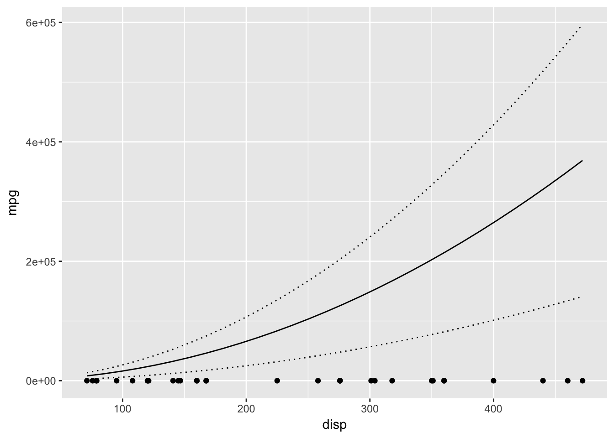
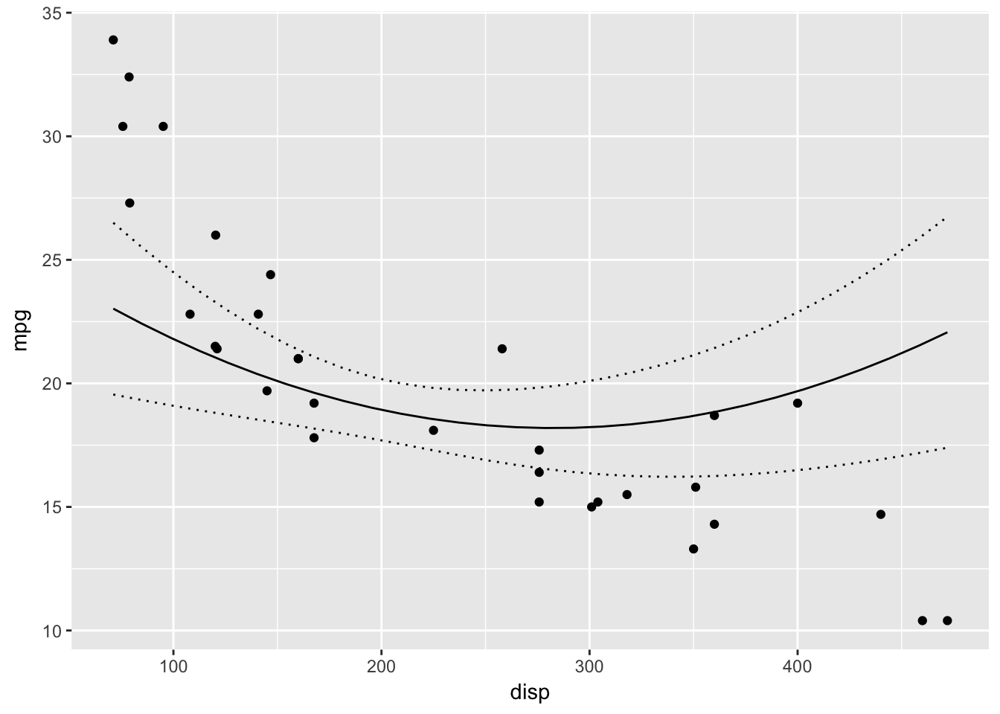

Introduction
rescale is an R package to rescale columns in a data frame based on the columns in a second data frame. For example a column can be rescaled by subtracting the mean and dividing by the standard deviation.
The package was developed for making predictions based on models with rescaled variables. For the predictions to be valid the new data frame must have its predictor variables rescaled based on the original data.
The rescale() function simply takes a list of the columns to centre (subtract mean) and scale (centre and then divide by standard deviation).
The rescale_c() allows columns to be transformed and the values rescaled based on rescaler codes.
The more general rescale_f() allows columns to be transformed and the values to subtract and/or divide by to be defined by functions.
Demonstration
library(ggplot2)
library(newdata)
library(rescale)
library(magrittr)
mtcars <- datasets::mtcars
data <- rescale(mtcars, scale = c("wt", "hp", "disp"))
model <- lm(mpg ~ wt + hp + poly(disp,2), data = data)
## generate new data for plotting change in mpg with disp
new_data <- newdata::new_data(mtcars, "disp")
# without rescaling data
prediction <- predict(model, newdata = new_data, interval = "confidence") %>% cbind(new_data)
gp <- ggplot(data = prediction, aes(x = disp, y = fit)) +
geom_point(data = mtcars, aes(y = mpg)) +
geom_line() +
geom_line(aes(y = lwr), linetype = "dotted") +
geom_line(aes(y = upr), linetype = "dotted") +
ylab("mpg")
gp
## scale data
scaled_data <- rescale(new_data, datasets::mtcars, scale = c("wt", "hp", "disp"))
prediction <- predict(model, newdata = scaled_data, interval = "confidence") %>%
cbind(new_data)
gp %+% prediction
Installation
To install the latest version from GitHub
# install.packages("devtools")
devtools::install_github("poissonconsulting/rescale")Contribution
Please report any issues.
Pull requests are always welcome.
Please note that this project is released with a Contributor Code of Conduct. By participating in this project you agree to abide by its terms.